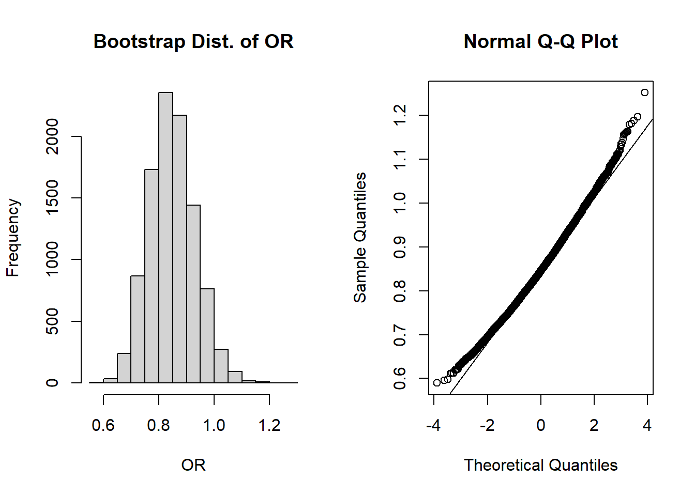
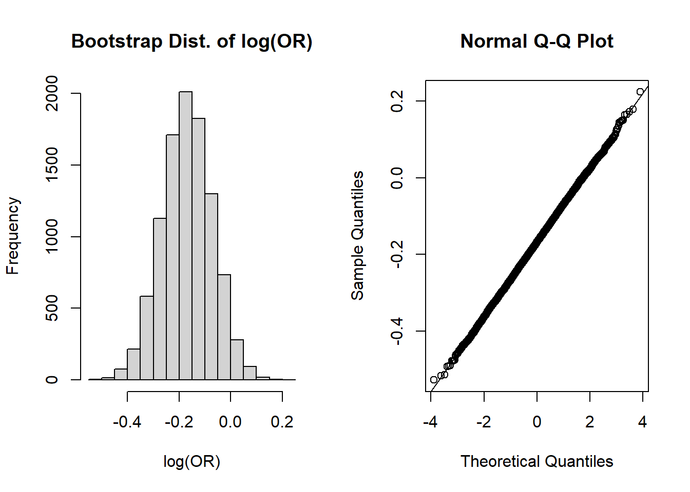
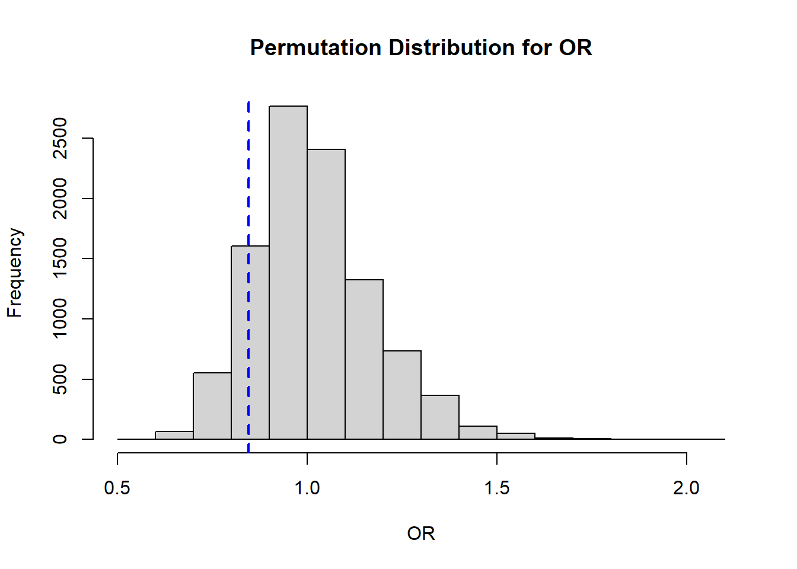

This page includes the solutions to the optional practice problems for the given week. If you want to see a version without solutions please click here. Data sets, if needed, are provided on the BIOS 6618 Canvas page for students registered for the course.
This week’s extra practice exercises are focusing on implementing bootstrap resampling and permutation testing to evaluate the odds ratio of an estimate.
Data Background
Complete the following exercises to conduct a bootstrap and a permutation test for a data set we first used in last week’s lab.
The following code can load the Surgery_Timing.csv file into R directly from our Canvas course. The surgery time data is based on a retrospective observational study of 32,001 elective general surgical patients, but we will subset to arthroplasty knee procedures. We will create a new variable to specify morning vs. afternoon surgery time as our “exposure” and will examine in-hospital complication rate as our “outcome” of interest.
Code
dat1 <-read.csv('../../.data/Surgery_Timing.csv')dat1s <- dat1[which(dat1$ahrq_ccs=='Arthroplasty knee'),]dat1s$AK_morning <- dat1s$hour <12# create new variable for morning observation, I use the "AK_" prefix to indicate variables I created
With this information we can calculate the odds ratio in a few ways (manually, with a function, etc.):
Code
# calculate the OR from epi.2by2library(epiR)tab1 <-table(morning =factor(dat1s$AK_morning, levels=c(TRUE,FALSE)), complication =factor(dat1s$complication, levels=c(1,0)) )epi.2by2(tab1)
Outcome + Outcome - Total Inc risk *
Exposed + 213 2474 2687 7.93 (6.93 to 9.01)
Exposed - 64 628 692 9.25 (7.20 to 11.66)
Total 277 3102 3379 8.20 (7.29 to 9.17)
Point estimates and 95% CIs:
-------------------------------------------------------------------
Inc risk ratio 0.86 (0.66, 1.12)
Inc odds ratio 0.84 (0.63, 1.13)
Attrib risk in the exposed * -1.32 (-3.71, 1.07)
Attrib fraction in the exposed (%) -16.67 (-52.32, 10.63)
Attrib risk in the population * -1.05 (-3.40, 1.30)
Attrib fraction in the population (%) -12.82 (-38.49, 8.09)
-------------------------------------------------------------------
Uncorrected chi2 test that OR = 1: chi2(1) = 1.277 Pr>chi2 = 0.258
Fisher exact test that OR = 1: Pr>chi2 = 0.276
Wald confidence limits
CI: confidence interval
* Outcomes per 100 population units
Code
# calculate the OR by hand where OR = ad/bca <-sum( dat1s$AK_morning==T & dat1s$complication==1 )b <-sum( dat1s$AK_morning==T & dat1s$complication==0 )c <-sum( dat1s$AK_morning==F & dat1s$complication==1 )d <-sum( dat1s$AK_morning==F & dat1s$complication==0 )obs_or <- (a*d)/(b*c)obs_or
[1] 0.844811
We see that in both approaches we arrive at an estimated odds ratio of 0.844, with a 95% CI from epi.2by2 of (0.63, 1.13).
Exercise 1: Bootstrap Confidence Intervals
Estimate the 95% normal percentile and bootstrap percentile confidence intervals with 10,000 bootstrap samples to describe the variability of our estimate and:
a. compare the resulting CIs to the estimate from epi.2by2
b. evaluate if the normal percentile CI has acceptable coverage
c. evaluate if the bootstrap percentile CI has acceptable accuracy
Solution:
Let’s start by implementing our bootstrap:
Code
B <-10^4#set number of bootstrapsor_boot <-numeric(B) #initialize vector to store results innM <-sum(dat1s$AK_morning==T) #sample size of morning knee proceduresnA <-sum(dat1s$AK_morning==F) #sample size of afternoon knee proceduresset.seed(1013) #set seed for reproducibilityfor (i in1:B){ morning.boot <-sample(dat1s[which(dat1s$AK_morning==T),'complication'], nM, replace=T) afternoon.boot <-sample(dat1s[which(dat1s$AK_morning==F),'complication'], nM, replace=T) a <-sum( morning.boot==1 ) b <-sum( morning.boot==0 ) c <-sum( afternoon.boot==1 ) d <-sum( afternoon.boot==0 ) or_boot[i] <- (a*d)/(b*c)}
Let’s now visualize the shape of our bootstrap distribution:
Code
par(mfrow=c(1,2)) #create plotting area for 2 figures in one rowhist(or_boot, main='Bootstrap Dist. of OR', xlab='OR')qqnorm(or_boot); qqline(or_boot)

The shapes of these plots suggest the odds ratios are NOT normally distributed, but are right skewed. However, recall that in our “by hand” confidence interval calculation we use \(log(OR)\), so perhaps we can take a quick detour to see the plots on the log-scale:
Code
par(mfrow=c(1,2)) #create plotting area for 2 figures in one rowhist(log(or_boot), main='Bootstrap Dist. of log(OR)', xlab='log(OR)')qqnorm(log(or_boot)); qqline(log(or_boot))

These look more normally distributed on the log scale (hence our use of the transformation).
Now back from our detour to the plots of log(OR)! Let’s first calculate the 95% normal percentile CI and its coverage:
Code
# Lower limit and coverageLL <-mean(or_boot) -1.96*sd(or_boot)LL
[1] 0.6860789
Code
sum(or_boot < LL)/B # Coverage of CI at lower end
[1] 0.017
Code
# Upper limit and coverageUL <-mean(or_boot) +1.96*sd(or_boot)UL
[1] 1.011845
Code
sum(or_boot > UL)/B # Coverage of CI at upper end
[1] 0.0321
Then let’s calculate the 95% bootstrap percentile CI and its accuracy:
Code
mean(or_boot) # bootstrap mean OR
[1] 0.8489622
Code
mean(or_boot)-obs_or # bias for OR
[1] 0.004151132
Code
sd(or_boot) # bootstrap SE
[1] 0.08310369
Code
(mean(or_boot)-obs_or) /sd(or_boot) # estimate of accuracy
[1] 0.04995123
Code
quantile(or_boot, c(0.025,0.975)) # 95% bootstrap percentile CI
2.5% 97.5%
0.697339 1.019918
Solution Part a:
The 95% normal percentile CI is (0.686, 1.012), the 95% bootstrap percentile CI is (0.697, 1.020), and our 95% CI from epi.2by2 was (0.63, 1.13). Both of these seem to suggest that our bootstrap estimates of the CIs on the OR-scale are biased towards the null compared the 95% confidence interval from epi.2by2 (i.e., 0.686 and 0.697 are closer to 1 than the epi.2by2 estimate of 0.63; 1.012 and 1.020 are closer to 1 than the epi.2by2 estimate of 1.13).
As yet another detour, what if we calculated the 95% intervals on the log-scale and then exponentiated back to the OR scale (like we do when we calculate our 95% CI by hand):
Code
### 95% normal percentile CI on the log(OR) scale then exponentiated# Lower limit and coveragelogLL <-mean(log(or_boot)) -1.96*sd(log(or_boot))expLL <-exp(logLL)expLL## [1] 0.6976017sum(or_boot < expLL)/B # Coverage of CI at lower end## [1] 0.0252# Upper limit and coveragelogUL <-mean(log(or_boot)) +1.96*sd(log(or_boot))expUL <-exp(logUL)expUL## [1] 1.023345sum(or_boot > expUL)/B # Coverage of CI at upper end## [1] 0.0234### 95% bootstrap percentile CI on the log(OR) scale then exponentiatedexp( quantile(log(or_boot), c(0.025,0.975)) ) # 95% bootstrap percentile CI## 2.5% 97.5% ## 0.697339 1.019918
There are few interesting points we can draw from this result:
The normal percentile interval estimated in this way has better coverage (2.52% on the lower tail, 2.34% on the upper tail), and its 95% interval is (0.698, 1.023). So while the interval here and from epi.2by2 still don’t match very well, the coverage is improved when using the \(log(OR)\) to estimate the interval. This “disconnect” between calculating the odds ratio at each iteration versus the log odds ratio is a direct application of Jensen’s inequality, where here we see that the exponentiated mean of log(OR) is not equivalent to the mean of the exponentiated log(OR) [i.e., the mean of our OR’s].
The bootstrap percentile interval is unchanged from before. This is because when calculating the quantiles, taking the log doesn’t change the ordering or affect our estimates of the mean or standard error like it does in the normal percentile interval. So the estimate for \(log(OR)\) and \(OR\) have the same ordering (from smallest to largest), and our nonparametric estimate is unaffected.
NOTE: This does not mean that the CI from the epi.2by2 function is “wrong” or that our bootstrap estimates are “wrong”! Just that different approaches (and assumptions behind the approaches) can result in different estimates.
Solution Part b:
In our original estimate on the original scale, the coverage is too low on the lower end (LL) at 1.7% (versus the expected 2.5% if normality held) and too high on the upper end (UL) at 3.21% (vs. 2.5%).
Solution Part c:
The ratio of |bias/SE| is less than 0.10, so we expect the bootstrap percentile CI to have acceptable accuracy.
Exercise 2: Permutation Test P-value
Implement a permutation test with 10,000 resamples to estimate a p-value for if our observed OR is significantly different from its null value for:
a. a two-sided p-value.
b. a one-sided p-value where we hypothesize that mornings have a lower odds of complications compared to the afternoon.
Solution:
We will start by implementing our permutation test:
Code
B <-10^4-1#set number of times to complete permutation samplingresult <-numeric(B)nM <-sum(dat1s$AK_morning==T) #sample size of morning knee proceduresa <-sum( dat1s$AK_morning==T & dat1s$complication==1 )b <-sum( dat1s$AK_morning==T & dat1s$complication==0 )c <-sum( dat1s$AK_morning==F & dat1s$complication==1 )d <-sum( dat1s$AK_morning==F & dat1s$complication==0 )obs_or <- (a*d)/(b*c) # the observed OR calculated manuallyset.seed(1013) #set seed for reproducibilitypool_dat <- dat1s$complicationfor(j in1:B){ index <-sample(x=1:length(pool_dat), size=nM, replace=F) morning_permute <- pool_dat[index] afternoon_permute <- pool_dat[-index] a <-sum( morning_permute==1 ) # calculate each cell of our 2x2 table to calculate the OR b <-sum( morning_permute==0 ) c <-sum( afternoon_permute==1 ) d <-sum( afternoon_permute==0 ) result[j] <- (a*d)/(b*c)}
We finish by visualizing our results:
Code
# Histogramhist( result, xlab='OR', main='Permutation Distribution for OR')abline( v=obs_or, lty=2, col='blue', lwd=2)

Solution Part a:
Based on our permutation distribution, we will calculate the proportion that would fall into either tail, then multiply the larger value by 2 (to be more conservative):
Code
#note, we take the larger p-value and multiply by 2 (as compared to replacing <= with >)((sum(result <= obs_or) +1)/(B+1))
[1] 0.1408
Code
((sum(result >= (1/obs_or)) +1)/(B+1))
[1] 0.1644
Here we see that the larger value is 0.1644, so our estimated 2-sided p-value is 0.3288. Therefore we would fail to reject the null hypothesis that the OR=1.
Solution Part b:
In this case, we have a priori specified a one-sided test, so we can evaluate the proportion of our permutation distribution that falls below our observed OR of 0.844 from 2a. Here we see \(p=0.1408\), so we still fail to reject \(H_0\) that the odds of a complication are different between morning and afternoon in knee surgeries.
Source Code
---title: "Week 5 Practice Problems: Solutions"author: name: Alex Kaizer roles: "Instructor" affiliation: University of Colorado-Anschutz Medical Campustoc: truetoc_float: truetoc-location: leftformat: html: code-fold: show code-overflow: wrap code-tools: true---```{r, echo=F, message=F, warning=F}library(kableExtra)library(dplyr)```This page includes the solutions to the optional practice problems for the given week. If you want to see a version [without solutions please click here](/labs/prac5/index.qmd). Data sets, if needed, are provided on the BIOS 6618 Canvas page for students registered for the course.This week's extra practice exercises are focusing on implementing bootstrap resampling and permutation testing to evaluate the odds ratio of an estimate.# Data BackgroundComplete the following exercises to conduct a bootstrap and a permutation test for a data set we first used in last week's lab.The following code can load the `Surgery_Timing.csv` file into R directly from our Canvas course. The surgery time data is based on a retrospective observational study of 32,001 elective general surgical patients, but we will subset to arthroplasty knee procedures. We will create a new variable to specify morning vs. afternoon surgery time as our "exposure" and will examine in-hospital complication rate as our "outcome" of interest.```{r, cache=T, class.source = 'fold-show'}dat1 <-read.csv('../../.data/Surgery_Timing.csv')dat1s <- dat1[which(dat1$ahrq_ccs=='Arthroplasty knee'),]dat1s$AK_morning <- dat1s$hour <12# create new variable for morning observation, I use the "AK_" prefix to indicate variables I created```With this information we can calculate the odds ratio in a few ways (manually, with a function, etc.):```{r, message=FALSE, class.source = 'fold-show', warning=F}# calculate the OR from epi.2by2library(epiR)tab1 <-table(morning =factor(dat1s$AK_morning, levels=c(TRUE,FALSE)), complication =factor(dat1s$complication, levels=c(1,0)) )epi.2by2(tab1)# calculate the OR by hand where OR = ad/bca <-sum( dat1s$AK_morning==T & dat1s$complication==1 )b <-sum( dat1s$AK_morning==T & dat1s$complication==0 )c <-sum( dat1s$AK_morning==F & dat1s$complication==1 )d <-sum( dat1s$AK_morning==F & dat1s$complication==0 )obs_or <- (a*d)/(b*c)obs_or```We see that in both approaches we arrive at an estimated odds ratio of 0.844, with a 95% CI from `epi.2by2` of (0.63, 1.13).## Exercise 1: Bootstrap Confidence IntervalsEstimate the 95% normal percentile and bootstrap percentile confidence intervals with 10,000 bootstrap samples to describe the variability of our estimate and:**a.** compare the resulting CIs to the estimate from `epi.2by2`**b.** evaluate if the normal percentile CI has acceptable coverage**c.** evaluate if the bootstrap percentile CI has acceptable accuracy**Solution:**Let's start by implementing our bootstrap:```{r}B <-10^4#set number of bootstrapsor_boot <-numeric(B) #initialize vector to store results innM <-sum(dat1s$AK_morning==T) #sample size of morning knee proceduresnA <-sum(dat1s$AK_morning==F) #sample size of afternoon knee proceduresset.seed(1013) #set seed for reproducibilityfor (i in1:B){ morning.boot <-sample(dat1s[which(dat1s$AK_morning==T),'complication'], nM, replace=T) afternoon.boot <-sample(dat1s[which(dat1s$AK_morning==F),'complication'], nM, replace=T) a <-sum( morning.boot==1 ) b <-sum( morning.boot==0 ) c <-sum( afternoon.boot==1 ) d <-sum( afternoon.boot==0 ) or_boot[i] <- (a*d)/(b*c)}```Let's now visualize the shape of our bootstrap distribution:```{r}par(mfrow=c(1,2)) #create plotting area for 2 figures in one rowhist(or_boot, main='Bootstrap Dist. of OR', xlab='OR')qqnorm(or_boot); qqline(or_boot)```The shapes of these plots suggest the odds ratios are NOT normally distributed, but are right skewed. However, recall that in our "by hand" confidence interval calculation we use $log(OR)$, so perhaps we can take a quick detour to see the plots on the log-scale:```{r}par(mfrow=c(1,2)) #create plotting area for 2 figures in one rowhist(log(or_boot), main='Bootstrap Dist. of log(OR)', xlab='log(OR)')qqnorm(log(or_boot)); qqline(log(or_boot))```These look more normally distributed on the log scale (hence our use of the transformation).*Now back from our detour to the plots of log(OR)!* Let's first calculate the 95% normal percentile CI and its coverage:```{r}# Lower limit and coverageLL <-mean(or_boot) -1.96*sd(or_boot)LLsum(or_boot < LL)/B # Coverage of CI at lower end# Upper limit and coverageUL <-mean(or_boot) +1.96*sd(or_boot)ULsum(or_boot > UL)/B # Coverage of CI at upper end ```Then let's calculate the 95% bootstrap percentile CI and its accuracy:```{r, class.source = 'fold-show'}mean(or_boot) # bootstrap mean ORmean(or_boot)-obs_or # bias for ORsd(or_boot) # bootstrap SE(mean(or_boot)-obs_or) /sd(or_boot) # estimate of accuracyquantile(or_boot, c(0.025,0.975)) # 95% bootstrap percentile CI```**Solution Part a:**The 95% normal percentile CI is (0.686, 1.012), the 95% bootstrap percentile CI is (0.697, 1.020), and our 95% CI from `epi.2by2` was (0.63, 1.13). Both of these seem to suggest that our bootstrap estimates of the CIs on the OR-scale are biased towards the null compared the 95% confidence interval from `epi.2by2` (i.e., 0.686 and 0.697 are closer to 1 than the `epi.2by2` estimate of 0.63; 1.012 and 1.020 are closer to 1 than the `epi.2by2` estimate of 1.13).*As yet another detour,* what if we calculated the 95% intervals on the log-scale and then exponentiated back to the OR scale (like we do when we calculate our 95% CI by hand):```{r, collapse=T}### 95% normal percentile CI on the log(OR) scale then exponentiated# Lower limit and coveragelogLL <-mean(log(or_boot)) -1.96*sd(log(or_boot))expLL <-exp(logLL)expLLsum(or_boot < expLL)/B # Coverage of CI at lower end# Upper limit and coveragelogUL <-mean(log(or_boot)) +1.96*sd(log(or_boot))expUL <-exp(logUL)expULsum(or_boot > expUL)/B # Coverage of CI at upper end### 95% bootstrap percentile CI on the log(OR) scale then exponentiatedexp( quantile(log(or_boot), c(0.025,0.975)) ) # 95% bootstrap percentile CI```There are few interesting points we can draw from this result:* The normal percentile interval estimated in this way has better coverage (2.52% on the lower tail, 2.34% on the upper tail), and its 95% interval is (0.698, 1.023). So while the interval here and from `epi.2by2` still don't match very well, the coverage is improved when using the $log(OR)$ to estimate the interval. This "disconnect" between calculating the odds ratio at each iteration versus the log odds ratio is a direct application of [Jensen's inequality](https://en.wikipedia.org/wiki/Jensen%27s_inequality), where here we see that the exponentiated mean of log(OR) is not equivalent to the mean of the exponentiated log(OR) [i.e., the mean of our OR's]. * The bootstrap percentile interval is *unchanged* from before. This is because when calculating the quantiles, taking the log doesn't change the ordering or affect our estimates of the mean or standard error like it does in the normal percentile interval. So the estimate for $log(OR)$ and $OR$ have the same ordering (from smallest to largest), and our nonparametric estimate is unaffected.**NOTE: This does not mean that the CI from the `epi.2by2` function is "wrong" or that our bootstrap estimates are "wrong"! Just that different approaches (and assumptions behind the approaches) can result in different estimates.****Solution Part b:**In our original estimate on the original scale, the coverage is too low on the lower end (`LL`) at 1.7% (versus the expected 2.5% if normality held) and too high on the upper end (`UL`) at 3.21% (vs. 2.5%).**Solution Part c:**The ratio of |bias/SE| is less than 0.10, so we expect the bootstrap percentile CI to have acceptable accuracy.## Exercise 2: Permutation Test P-valueImplement a permutation test with 10,000 resamples to estimate a p-value for if our observed OR is significantly different from its null value for:**a.** a two-sided p-value.**b.** a one-sided p-value where we hypothesize that mornings have a lower odds of complications compared to the afternoon.**Solution:**We will start by implementing our permutation test:```{r}B <-10^4-1#set number of times to complete permutation samplingresult <-numeric(B)nM <-sum(dat1s$AK_morning==T) #sample size of morning knee proceduresa <-sum( dat1s$AK_morning==T & dat1s$complication==1 )b <-sum( dat1s$AK_morning==T & dat1s$complication==0 )c <-sum( dat1s$AK_morning==F & dat1s$complication==1 )d <-sum( dat1s$AK_morning==F & dat1s$complication==0 )obs_or <- (a*d)/(b*c) # the observed OR calculated manuallyset.seed(1013) #set seed for reproducibilitypool_dat <- dat1s$complicationfor(j in1:B){ index <-sample(x=1:length(pool_dat), size=nM, replace=F) morning_permute <- pool_dat[index] afternoon_permute <- pool_dat[-index] a <-sum( morning_permute==1 ) # calculate each cell of our 2x2 table to calculate the OR b <-sum( morning_permute==0 ) c <-sum( afternoon_permute==1 ) d <-sum( afternoon_permute==0 ) result[j] <- (a*d)/(b*c)}```We finish by visualizing our results:```{r}# Histogramhist( result, xlab='OR', main='Permutation Distribution for OR')abline( v=obs_or, lty=2, col='blue', lwd=2)```**Solution Part a:**Based on our permutation distribution, we will calculate the proportion that would fall into either tail, then multiply the larger value by 2 (to be more conservative):```{r}#note, we take the larger p-value and multiply by 2 (as compared to replacing <= with >)((sum(result <= obs_or) +1)/(B+1))((sum(result >= (1/obs_or)) +1)/(B+1))```Here we see that the larger value is 0.1644, so our estimated 2-sided p-value is `r 2*max(((sum(result >= (1/obs_or)) + 1)/(B+1)),((sum(result <= obs_or) + 1)/(B+1)))`. Therefore we would fail to reject the null hypothesis that the OR=1.**Solution Part b:**In this case, we have *a priori* specified a one-sided test, so we can evaluate the proportion of our permutation distribution that falls below our observed OR of 0.844 from **2a**. Here we see $p=0.1408$, so we still fail to reject $H_0$ that the odds of a complication are different between morning and afternoon in knee surgeries.